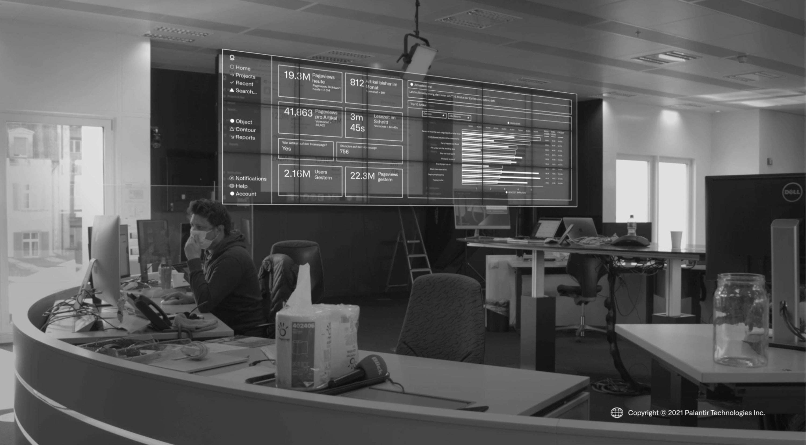

Palantir + Ringier
自 2019 年起，Palantir 与 Ringier 建立合作关系，助力地方新闻编辑室为读者提供高质量内容。

播放视频
借助统一的数据视角，我们得以更好地服务读者并为他们提供资讯……我们不仅提升了内容质量并扩大了触达范围，还实现了营收的增长，这对于支持 Blick 每日提供高质量新闻报道至关重要。
自 2019 年起，Palantir 与 Ringier 建立合作关系，助力地方新闻编辑室为读者提供高质量内容。

借助统一的数据视角，我们得以更好地服务读者并为他们提供资讯……我们不仅提升了内容质量并扩大了触达范围，还实现了营收的增长，这对于支持 Blick 每日提供高质量新闻报道至关重要。